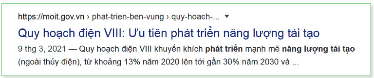
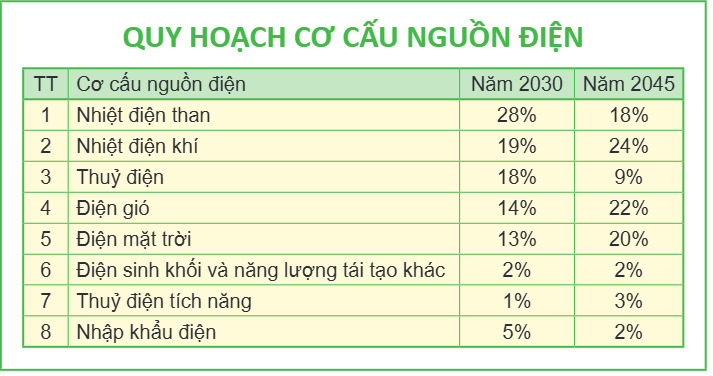

Dành cho giáo viên
Theo dõi lớp
| Học sinh / Nhóm | Đã nộp | Cập nhật |
|---|
Bước 1
1 Khởi động
Khởi động Năng lượng tái tạo
Minh: Khi bật đèn để căn phòng tràn ngập ánh sáng, khi lái một chiếc ô tô, hay chỉ đơn giản là nấu cơm, mọi người đều đang sử dụng năng lượng.
Khoa: Hầu hết năng lượng đến từ nhiên liệu hoá thạch như xăng và than.
An: Trái Đất mất hàng triệu năm để tạo ra nhiên liệu hoá thạch. Các bạn có tưởng tượng được, một ngày nào đó, chúng sẽ cạn kiệt và biến mất không?
Minh: Khám phá các nguồn năng lượng khác để thay thế. Đó là những nguồn năng lượng dường như không bao giờ cạn kiệt như nắng, gió, nước và thậm chí là rác thải.
Khoa: Điện gió, điện mặt trời và cả thuỷ điện nữa đều có những nhược điểm. Chúng ta cần tìm hiểu thông tin đầy đủ hơn.
Em hãy tạo một bài trình chiếu với chủ đề Năng lượng tái tạo để giải quyết những băn khoăn của các bạn.
Khoa: Hầu hết năng lượng đến từ nhiên liệu hoá thạch như xăng và than.
An: Trái Đất mất hàng triệu năm để tạo ra nhiên liệu hoá thạch. Các bạn có tưởng tượng được, một ngày nào đó, chúng sẽ cạn kiệt và biến mất không?
Minh: Khám phá các nguồn năng lượng khác để thay thế. Đó là những nguồn năng lượng dường như không bao giờ cạn kiệt như nắng, gió, nước và thậm chí là rác thải.
Khoa: Điện gió, điện mặt trời và cả thuỷ điện nữa đều có những nhược điểm. Chúng ta cần tìm hiểu thông tin đầy đủ hơn.
Em hãy tạo một bài trình chiếu với chủ đề Năng lượng tái tạo để giải quyết những băn khoăn của các bạn.
Ghi bài Khởi động
Sau khi thầy cô chốt, em chép nội dung dưới đây vào vở.
Bước 2 · Thực hành
2.1 Nhiệm vụ 1. Hình thành ý tưởng và cấu trúc bài trình chiếu về chủ đề năng lượng tái tạo
Thực hành Bước 1, 2: Xây dựng ý tưởng
Bước 1. Nêu một khía cạnh hay một vấn đề cụ thể về năng lượng tái tạo mà em định trình bày như thuỷ điện, điện gió, điện mặt trời,… hoặc năng lượng tái tạo tại địa phương, nơi em đang sinh sống.
Bước 2. Phát triển ý tưởng thành nội dung cụ thể, sắp xếp theo trình tự lôgic, thể hiện dưới dạng câu hỏi, ví dụ: Năng lượng tái tạo là gì? Nguồn năng lượng nào sản xuất ra điện ở nơi em sinh sống? Ưu, nhược điểm? Loại năng lượng nào sẽ thay thế xăng dầu cho ô tô, xe máy? Nếu thiết kế một nhà máy điện, em sẽ chọn cách sản xuất điện nào?
Bước 2. Phát triển ý tưởng thành nội dung cụ thể, sắp xếp theo trình tự lôgic, thể hiện dưới dạng câu hỏi, ví dụ: Năng lượng tái tạo là gì? Nguồn năng lượng nào sản xuất ra điện ở nơi em sinh sống? Ưu, nhược điểm? Loại năng lượng nào sẽ thay thế xăng dầu cho ô tô, xe máy? Nếu thiết kế một nhà máy điện, em sẽ chọn cách sản xuất điện nào?
Thực hành Bước 3: Cấu trúc và yêu cầu
Bước 3. Xác định mức độ, yêu cầu cụ thể với bài trình chiếu. Ví dụ:
- Bài trình chiếu khoảng 10 trang: trang tiêu đề, trang dàn ý, trang giới thiệu vấn đề, một số trang nội dung, trang kết luận và trang tài liệu tham khảo.
- Mỗi trang nội dung không quá 6 mục; mỗi mục không quá 2 dòng.
- Bài trình chiếu cần có ít nhất 2 hình ảnh minh hoạ cho nội dung trình bày.
Ghi bài Nhiệm vụ 1
Sau khi thầy cô chốt, em chép nội dung dưới đây vào vở.
Bước 2 · Thực hành
2.2 Nhiệm vụ 2. Tìm kiếm và đánh giá thông tin
Thực hành Bước 1, 2: Tìm kiếm và ghi chép
Bước 1. Sử dụng máy tìm kiếm với các từ khoá tìm kiếm như “năng lượng tái tạo”, “năng lượng thay thế”, “ưu, nhược điểm của thuỷ điện”, “ưu, nhược điểm của điện gió”,…
Bước 2. Ghi chép kết quả tìm kiếm để thuận tiện cho việc đánh giá và tham khảo. Bảng 3.1 là một ví dụ.
Bước 2. Ghi chép kết quả tìm kiếm để thuận tiện cho việc đánh giá và tham khảo. Bảng 3.1 là một ví dụ.
| STT | Nội dung | Địa chỉ trang web | Nguồn gốc | Thời gian |
|---|---|---|---|---|
| 1 | Khái niệm chung về các nguồn năng lượng | https://hvacr.vn/diendan/ | Cộng đồng Cơ Điện Lạnh Việt Nam | 2008 |
| 2 | Năng lượng tái tạo sẽ thống trị công suất điện toàn thế giới | https://www.evn.com.vn/ | Tập đoàn Điện lực Việt Nam | 2022 |
| 3 | Quy hoạch điện VIII: Ưu tiên phát triển năng lượng tái tạo | http://www.erea.gov.vn/vi-VN | Bộ Công Thương | 2021 |
Thực hành Bước 3: Đánh giá thông tin
Bước 3. Trước khi sử dụng thông tin để minh hoạ cho lập luận của mình, em cần đánh giá lợi ích của thông tin bằng cách trả lời một số câu hỏi như:
- Thông tin có thực sự phù hợp với nội dung trình bày không? Chẳng hạn, kiến thức chung về các nguồn năng lượng sẽ không đáp ứng được yêu cầu dự báo phát triển của các nguồn năng lượng.
- Nguồn tin có đáng tin cậy không? Chẳng hạn, với nội dung quy hoạch cơ cấu nguồn điện, thông tin từ cơ quan chính phủ đáng tin cậy hơn thông tin trên các diễn đàn hay trang web của doanh nghiệp.

Ghi bài Nhiệm vụ 2
Sau khi thầy cô chốt, em chép nội dung dưới đây vào vở.
Bước 2 · Thực hành
2.3 Nhiệm vụ 3. Xử lí và trao đổi thông tin
Thực hành Bước 1, 2: Tạo và biên tập bài trình chiếu
Bước 1. Tạo các trang của bài trình chiếu theo cấu trúc đã định (trang dàn ý, trang nội dung, trang tài liệu tham khảo); soạn nội dung từng trang phù hợp với lập luận của cả bài; sử dụng thông tin đã được chọn làm tư liệu tham khảo.
Bước 2. Biên tập nội dung sao cho mỗi trang không quá 6 mục, mỗi mục không quá 2 dòng; sử dụng phần mềm xử lí hình ảnh để tạo và sửa hình ảnh minh hoạ phù hợp với nội dung.
Bước 2. Biên tập nội dung sao cho mỗi trang không quá 6 mục, mỗi mục không quá 2 dòng; sử dụng phần mềm xử lí hình ảnh để tạo và sửa hình ảnh minh hoạ phù hợp với nội dung.

Thực hành Bước 3: Chia sẻ bài trình chiếu
Lựa chọn phương tiện kĩ thuật số để chia sẻ bài trình chiếu: thư điện tử, mạng xã hội, không gian lưu trữ dùng chung,… Giải thích phương án lựa chọn của em theo các tiêu chí: dễ sử dụng và an toàn dữ liệu.
Ghi bài Nhiệm vụ 3
Sau khi thầy cô chốt, em chép nội dung dưới đây vào vở.
Bước 3
3 Luyện tập
Luyện tập Bài tập SGK trang 17
Ghi bài Luyện tập
Sau khi thầy cô chốt, em chép nội dung dưới đây vào vở.
Bước 4
4 Vận dụng
Vận dụng Đánh giá nguồn thông tin
Ghi bài Vận dụng
Sau khi thầy cô chốt, em chép nội dung dưới đây vào vở.